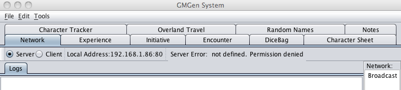
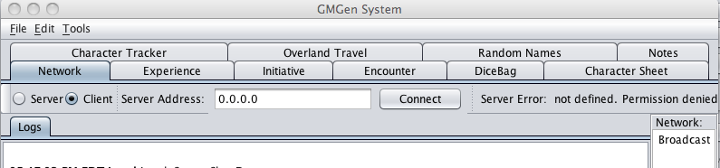

The network plug-in allows GMGen to act as a Client-Server application connecting multiple computers running PCGen. Players load their characters on their computers and activate the network client. The GM, running the network server, can see all the PC information that is available inside of the Initiative plugin. Either side will be able to change hitpoints, status, initiative and that sort of thing for the PC. In the Experience plugin, it will allow the GM to assign experience, and it will send it to the PC over the network.

PCGen Network Server

PCGen Network Client
How to use it:
1) When you enter the tab, and click on the 'server' radio button, it starts the server. The server binds to port 80, but you can set the port in the GMGen preferences.
2) Players will need to go to the GMGen preferences and each one will need to select a "user name", and change the port (if you changed the port on your server).
3) The players will need to type your ip address in the box and hit connect to connect to your server - once they do, you as the GM will get all of their logs.
4) Currently (but this will be fixed in the future) every time the pc enters or leaves the Initiative tab, it will send the GM all loaded player characters. eventually, I will make it so it can catch events on the pc side, to instantly send any changes.